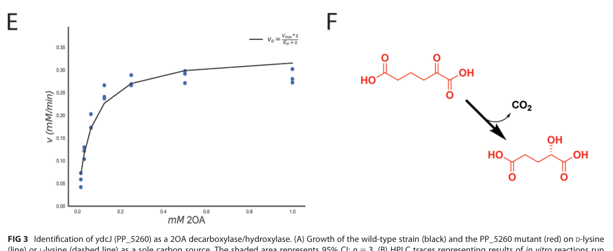

2-oxoadipate dioxygenase/decarboxylase that catalyzes the decarboxylation and hydroxylation of 2-oxoadipate to form D-2-hydroxyglutarate. This Fe(2+)-dependent enzyme is specific for 2-oxoadipate and plays a crucial role in D-lysine catabolism in Pseudomonas putida KT2440. The enzyme performs the last step in a lysine degradation pathway, converting 2-oxoadipate (derived from lysine) into D-2-hydroxyglutarate with the release of CO2. Note: The deep research file incorrectly conflates this enzyme with α-hydroxyglutarate oxidoreductase from 1969 research, which catalyzes the opposite reaction (oxidizing D-2-hydroxyglutarate to 2-oxoglutarate).
| GO Term | Evidence | Action | Reason |
|---|---|---|---|
|
GO:0016491
oxidoreductase activity
|
IEA
GO_REF:0000120 |
MODIFY |
Summary: This general oxidoreductase annotation is correct but too broad. The enzyme does perform oxidation-reduction, but a more specific term should be used.
Proposed replacements:
2-oxoadipate dioxygenase/decarboxylase activity
Supporting Evidence:
file:PSEPK/hglS/hglS-deep-research-falcon.md
the transformation is described as an unusual decarboxylation/hydroxylation-like chemistry; associated mechanistic evidence indicates **O2 is consumed stoichiometrically with substrate** and isotopic labeling under **18O2** yields product containing **two 18O atoms**, consistent with incorporation from molecular oxygen.
file:PSEPK/hglS/hglS-deep-research-falcon.md
This provides a mechanistic rationale for the UniProt-style naming “2-oxoadipate dioxygenase/decarboxylase.”
|
|
GO:0051213
dioxygenase activity
|
IEA
GO_REF:0000043 |
ACCEPT |
Summary: Correct annotation - the enzyme is indeed a dioxygenase that incorporates both atoms of O2, with one oxygen going into the hydroxyl group of 2-hydroxyglutarate and the other released as CO2 after decarboxylation.
Supporting Evidence:
file:PSEPK/hglS/hglS-deep-research.md
See deep research file for comprehensive analysis
file:PSEPK/hglS/hglS-deep-research-falcon.md
HglS is an **Fe(II)-dependent metalloenzyme** that converts **2-oxoadipate (2OA)** to **D-2-hydroxyglutarate (D-2HG)**
file:PSEPK/hglS/hglS-deep-research-falcon.md
the stereochemistry was assigned using an **enzyme-coupled assay specific for D-2HG**, demonstrating formation of **D-2HG**.
|
Q: Why did evolution select D-2-hydroxyglutarate as the product rather than L-2-hydroxyglutarate?
Suggested experts: Metabolic evolution researchers, stereochemistry experts
Q: What is the physiological role of D-2-hydroxyglutarate in P. putida beyond being a metabolite?
Suggested experts: Bacterial metabolism researchers
Q: Can HglS be engineered for biocatalytic production of chiral hydroxy acids?
Suggested experts: Industrial biotechnology groups
Experiment: Directed evolution of HglS to accept alternative substrates
Experiment: Metabolomics analysis of D-2-hydroxyglutarate levels under different growth conditions
This report is retrieval-only and is generated directly from Asta results.
search_papers_by_relevance with snippet_search.The research report should be a detailed narrative explaining the function, biological processes, and localization of the gene product. Citations should be given for all claims.
You should prioritize authoritative reviews and primary scientific literature when conducting research. You can supplement
this with annotations you find in gene/protein databases, but these can be outdated or inaccurate.
We are specifically interested in the primary function of the gene - for enzymes, what reaction is catalyzed, and what is the substrate specificity? For transporters, what is the substrate? For structural proteins or adapters, what is the broader structural role? For signaling molecules, what is the role in the pathway.
We are interested in where in or outside the cell the gene product carries out its function.
We are also interested in the signaling or biochemical pathways in which the gene functions. We are less interested in broad pleiotropic effects, except where these elucidate the precise role.
Include evidence where possible. We are interested in both experimental evidence as well as inference from structure, evolution, or bioinformatic analysis. Precise studies should be prioritized over high-throughput, where available.
The UniProt target Q88CC1 corresponds to Pseudomonas putida KT2440 locus PP_5260, annotated in the primary literature as ydcJ and provisionally named 2-hydroxyglutarate synthase (hglS). Experimental genetics and enzymology show that HglS is an Fe(II)-dependent metalloenzyme that converts 2-oxoadipate (2OA) to D-2-hydroxyglutarate (D-2HG), providing a key missing step connecting lysine catabolism to central metabolism (TCA entry via 2-ketoglutarate). (thompson2019massivelyparallelfitness pages 4-7, thompson2019massivelyparallelfitness pages 9-12, thompson2019massivelyparallelfitness pages 1-2)
HglS (PP_5260/ydcJ; UniProt Q88CC1) is a DUF1338/HGLS-family enzyme discovered via genome-wide fitness profiling in P. putida lysine metabolism and biochemically validated as a metalloenzyme acting on the lysine-catabolic intermediate 2OA. (thompson2019massivelyparallelfitness pages 1-2, thompson2019massivelyparallelfitness pages 7-9)
Biochemical function (experimentally supported): HglS catalyzes direct conversion of 2-oxoadipate (2OA) → D-2-hydroxyglutarate (D-2HG). (thompson2019massivelyparallelfitness pages 4-7, thompson2019asongof pages 20-26, thompson2019massivelyparallelfitness media 83745ba4)
Cofactor: activity depends on a divalent metal and is specifically restored by Fe(II) following EDTA treatment, supporting an Fe(II)-dependent metalloenzyme mechanism. (thompson2019massivelyparallelfitness pages 4-7, thompson2019massivelyparallelfitness pages 14-15)
Mechanistic interpretation: the transformation is described as an unusual decarboxylation/hydroxylation-like chemistry; associated mechanistic evidence indicates O2 is consumed stoichiometrically with substrate and isotopic labeling under 18O2 yields product containing two 18O atoms, consistent with incorporation from molecular oxygen. (thompson2019massivelyparallelfitness pages 9-12, thompson2019asongof pages 99-102)
Note on EC number: UniProt lists EC 1.13.11.93 for this protein; however, the accessible primary paper excerpts providing direct biochemical validation do not explicitly state the EC number in the captured text. The functional assignment nonetheless aligns with an oxygenase/decarboxylase-like metalloenzyme chemistry described above. (thompson2019massivelyparallelfitness pages 4-7, thompson2019asongof pages 99-102)
A ΔPP_5260 (ΔhglS) deletion mutant cannot grow on either lysine isomer, establishing that HglS is necessary for lysine utilization in vivo and is not a minor side reaction. (thompson2019massivelyparallelfitness pages 4-7, thompson2019asongof pages 20-26)
Purified PP_5260 incubated with 2OA shows strong substrate depletion (~92% decrease in 2OA versus controls), and short-time reactions show ~1:1 stoichiometry between 2OA consumption and 2HG formation (e.g., ~200 µM 2HG formed with ~800 µM 2OA remaining after 5 min from a 1 mM pool). (thompson2019massivelyparallelfitness pages 4-7, thompson2019asongof pages 20-26)
Product identity was confirmed by LC-TOF/HPLC matching to 2HG standards, and the stereochemistry was assigned using an enzyme-coupled assay specific for D-2HG, demonstrating formation of D-2HG. (thompson2019massivelyparallelfitness pages 4-7, thompson2019asongof pages 20-26)
Michaelis–Menten kinetics for 2OA are reported with Km = 0.06 mM (±0.03), Vmax = 0.33 mM/min (±0.08), and kcat = 330 min⁻¹ (as reported), with the kinetic plot and reaction depiction provided in Figure 3 (panels E/F). (thompson2019massivelyparallelfitness pages 4-7, thompson2019massivelyparallelfitness media 83745ba4)
HglS functions in the P. putida lysine catabolic network at the step converting 2OA to D-2HG, linking lysine degradation to downstream processing toward 2-ketoglutarate and the TCA cycle. (thompson2019massivelyparallelfitness pages 4-7, thompson2019massivelyparallelfitness pages 1-2)
A key conceptual point is stereochemical separation: HglS generates D-2HG, which is proposed to be processed by PP_4493 (rather than the L-2HG-specific oxidase LhgO), preventing mixing with the L-lysine branch that yields L-2HG. (thompson2019massivelyparallelfitness pages 9-12, thompson2019asongof pages 99-102)
Comparative genomics further supports a catabolic role for DUF1338/HglS homologs: these proteins are broadly distributed and frequently located near other amino-acid catabolic enzymes (transaminases, dehydrogenases/oxidoreductases), consistent with pathway coupling to central metabolism. (thompson2019massivelyparallelfitness pages 7-9)
Targeted proteomics reported that PP_5260/YdcJ abundance is increased when P. putida is grown on L-lysine, D-lysine, or 2-aminoadipate relative to glucose, consistent with induction by lysine-pathway metabolites. (thompson2019asongof pages 29-34, thompson2019massivelyparallelfitness pages 9-12)
Fitness profiling also implicated the sigma factor RpoX as being required for fitness on D-lysine, suggesting pathway-level transcriptional regulation associated with D-lysine utilization (not necessarily direct regulation of hglS, but consistent with a regulated catabolic module). (thompson2019massivelyparallelfitness pages 9-12)
No direct subcellular localization experiments for HglS were found in the retrieved evidence. Given that (i) the substrates/products (2OA, D-2HG) are soluble central metabolites and (ii) the enzyme was purified and assayed as a soluble Fe(II)-dependent metalloenzyme, the most defensible functional localization is cytosolic (inference, not direct experimental localization). (thompson2019massivelyparallelfitness pages 4-7, thompson2019massivelyparallelfitness pages 14-15)
A 2024 ACS Infectious Diseases study introduced/validated integral solvent-induced protein precipitation (iSPP) coupled to quantitative LC–MS/MS to measure ligand/drug target engagement in bacterial lysates. In E. coli validation experiments, the authors reported significant stabilization of 2-hydroxyglutarate synthase (HGLS) following ampicillin treatment (along with PBPs), noting HGLS involvement in D-lysine metabolism (Figure 2C). The study reports, across conditions, identification of an average of 2,163 proteins, using 10 µM drug and n = 3 replicates; volcano-plot thresholds included |log2 fold change| > 0.5 and p < 0.05. (bizzarri2024studyingtarget–engagementof pages 6-8)
This is not a functional characterization of P. putida HglS, but it is a concrete example of a real-world implementation where HGLS-type proteins appear as measurable, condition-responsive proteins in modern chemoproteomic workflows. (bizzarri2024studyingtarget–engagementof pages 6-8)
Within the tool-accessible search results, no additional 2023–2024 primary articles directly extending the biochemical mechanism, structure, or engineering of P. putida KT2440 HglS/PP_5260 were retrieved beyond the 2024 iSPP methodological mention. Therefore, the core mechanistic/kinetic evidence base available here remains anchored in 2019 primary work, supplemented by mechanistic/structural evidence in an associated 2019 dissertation excerpt. (thompson2019massivelyparallelfitness pages 4-7, thompson2019asongof pages 99-102, bizzarri2024studyingtarget–engagementof pages 6-8)
The 2019 study frames PP_5260/HglS as a solution to a longstanding gap connecting lysine catabolism to central metabolism in P. putida, discovered via RB-TnSeq and then validated by targeted biochemistry. The work also emphasizes that DUF1338 proteins were previously uncharacterized despite broad phylogenetic distribution, making HglS a representative “first function” assignment for a widespread family. (thompson2019massivelyparallelfitness pages 1-2, thompson2019massivelyparallelfitness pages 7-9)
The authors’ comparison to hydroxymandelate synthase and the additional evidence of O2 consumption and incorporation of oxygen from O2 into product support interpretation of HglS as an Fe(II)-dependent enzyme performing a coupled decarboxylation/oxygenation chemistry rather than a simple non-oxidative decarboxylase. This provides a mechanistic rationale for the UniProt-style naming “2-oxoadipate dioxygenase/decarboxylase.” (thompson2019massivelyparallelfitness pages 9-12, thompson2019asongof pages 99-102)
The tables below consolidate the enzyme’s biochemical function and pathway context into citable, audit-friendly summaries.
| Claim | Key quantitative details | Evidence type | Source |
|---|---|---|---|
| Identity/function: PP_5260 (also called ydcJ; tentatively named hglS) from Pseudomonas putida KT2440 is a DUF1338/HGLS-family metalloenzyme that catalyzes conversion of 2-oxoadipate (2OA) to D-2-hydroxyglutarate (D-2HG) | Figure-localized kinetic/reaction panels identify PP_5260 with the 2OA→D-2HG reaction; family/domain assignment is DUF1338/HGLS-like (thompson2019massivelyparallelfitness pages 1-2, thompson2019massivelyparallelfitness media 83745ba4) | RB-TnSeq-guided pathway discovery; in vitro enzymology; family/domain inference | Thompson et al., 2019-06, mBio, DOI: 10.1128/mBio.02577-18, https://doi.org/10.1128/mbio.02577-18 (thompson2019massivelyparallelfitness pages 1-2, thompson2019massivelyparallelfitness media 83745ba4) |
| Reaction/product: HglS directly converts 2OA to D-2HG | Short-time assays showed 1:1 stoichiometry: about 200 µM 2HG formed with 800 µM 2OA remaining after 5 min from a 1 mM starting substrate pool; long assays showed ~92% decrease in 2OA versus boiled/EDTA controls (thompson2019massivelyparallelfitness pages 4-7, thompson2019asongof pages 20-26) | In vitro enzymology; substrate/product quantification | Thompson et al., 2019-06, mBio, DOI: 10.1128/mBio.02577-18, https://doi.org/10.1128/mbio.02577-18 (thompson2019massivelyparallelfitness pages 4-7, thompson2019asongof pages 20-26) |
| Stereochemistry: the product is specifically D-2HG, not L-2HG | Product identity matched 2HG standards by LC-TOF/HPLC, and stereochemistry was assigned by an enzyme-coupled assay specific for D-2HG (thompson2019massivelyparallelfitness pages 4-7, thompson2019asongof pages 20-26) | LC-TOF/HPLC product identification; stereospecific coupled assay | Thompson et al., 2019-06, mBio, DOI: 10.1128/mBio.02577-18, https://doi.org/10.1128/mbio.02577-18 (thompson2019massivelyparallelfitness pages 4-7, thompson2019asongof pages 20-26) |
| Cofactor requirement: HglS is an Fe(II)-dependent metalloenzyme | EDTA treatment abolished activity; after apo-enzyme preparation, only Fe(II) reconstituted catalysis. Standard assay conditions reported included 5 mM 2OA, 10 µM purified enzyme, 50 mM HEPES, 16 h at 30°C for endpoint assays (thompson2019massivelyparallelfitness pages 4-7, thompson2019massivelyparallelfitness pages 14-15) | Metal-dependence assay; reconstitution biochemistry | Thompson et al., 2019-06, mBio, DOI: 10.1128/mBio.02577-18, https://doi.org/10.1128/mbio.02577-18 (thompson2019massivelyparallelfitness pages 4-7, thompson2019massivelyparallelfitness pages 14-15) |
| Kinetics with 2OA substrate: HglS shows measurable Michaelis-Menten behavior on 2OA | Km = 0.06 mM ± 0.03, Vmax = 0.33 mM/min ± 0.08, kcat = 330 min⁻¹ (as reported); kinetic plot shown in Fig. 3E and reaction scheme in Fig. 3F (thompson2019massivelyparallelfitness pages 4-7, thompson2019massivelyparallelfitness media 83745ba4) | Enzyme kinetics | Thompson et al., 2019-06, mBio, DOI: 10.1128/mBio.02577-18, https://doi.org/10.1128/mbio.02577-18 (thompson2019massivelyparallelfitness pages 4-7, thompson2019massivelyparallelfitness media 83745ba4) |
| Physiological role: HglS is required for lysine catabolism feeding into central metabolism | A ΔPP_5260 mutant cannot grow on either lysine isomer; RB-TnSeq identified PP_5260 as important in lysine utilization, placing the enzyme in the 2OA catabolic segment of the pathway (thompson2019massivelyparallelfitness pages 4-7, thompson2019asongof pages 20-26, thompson2019massivelyparallelfitness pages 1-2) | Genetics; fitness profiling; growth phenotype | Thompson et al., 2019-06, mBio, DOI: 10.1128/mBio.02577-18, https://doi.org/10.1128/mbio.02577-18 (thompson2019massivelyparallelfitness pages 4-7, thompson2019asongof pages 20-26, thompson2019massivelyparallelfitness pages 1-2) |
| Mechanistic description: the chemistry is an unusual decarboxylative/hydroxylative transformation of 2OA to D-2HG | Authors describe the transformation as an unusual route of decarboxylation with hydroxylation-like chemistry; later structural/mechanistic evidence indicates O2 consumption in 1:1 stoichiometry with substrate and incorporation of oxygen from O2 into product (thompson2019massivelyparallelfitness pages 9-12, thompson2019asongof pages 99-102) | Biochemical interpretation; O2-consumption/isotope evidence | Thompson dissertation/associated mechanistic work, 2019, excerpted evidence with structural/biochemical data (thompson2019asongof pages 99-102); Thompson et al., 2019-06, mBio, https://doi.org/10.1128/mbio.02577-18 (thompson2019massivelyparallelfitness pages 9-12) |
Table: This table compiles the experimentally supported biochemical claims for P. putida KT2440 HglS/PP_5260, including reaction, stereochemistry, Fe(II) dependence, kinetics, and assay conditions. It is useful for linking UniProt annotation of Q88CC1 to the primary enzymology and physiological evidence in the literature.
| Aspect | Finding | Evidence/interpretation |
|---|---|---|
| Gene/protein identity | HglS in Pseudomonas putida KT2440 corresponds to PP_5260, also called YdcJ; it is a DUF1338/HGLS-family enzyme assigned as 2-hydroxyglutarate synthase / 2-oxoadipate dioxygenase-decarboxylase (thompson2019massivelyparallelfitness pages 4-7, thompson2019massivelyparallelfitness pages 1-2) | Identity matches the UniProt target context and the primary 2019 biochemical/genetic study (thompson2019massivelyparallelfitness pages 4-7, thompson2019massivelyparallelfitness pages 1-2) |
| Immediate substrate | HglS acts on 2-oxoadipate (2OA), an intermediate in lysine catabolism downstream of L-2-aminoadipate transamination (thompson2019massivelyparallelfitness pages 4-7, thompson2019asongof pages 20-26) | In vitro enzyme assays and pathway reconstruction place 2OA directly upstream of HglS (thompson2019massivelyparallelfitness pages 4-7, thompson2019asongof pages 20-26, thompson2019massivelyparallelfitness media 83745ba4) |
| Immediate product | HglS converts 2OA to D-2-hydroxyglutarate (D-2HG), preserving stereochemical separation from L-2HG generated in the L-lysine branch (thompson2019massivelyparallelfitness pages 4-7, thompson2019massivelyparallelfitness pages 9-12, thompson2019asongof pages 99-102) | Product identity and D-stereochemistry were supported by LC-TOF/HPLC comparison to standards and a D-2HG-specific coupled assay (thompson2019massivelyparallelfitness pages 4-7, thompson2019asongof pages 20-26) |
| Downstream metabolism | D-2HG produced by HglS is proposed to be oxidized by PP_4493 en route to central metabolism / the TCA cycle, whereas LhgO is noted as L-2HG-specific and therefore not the appropriate downstream enzyme for HglS product (thompson2019massivelyparallelfitness pages 9-12, thompson2019asongof pages 99-102) | This is a key pathway-disambiguation point: HglS feeds the D-2HG branch, not the L-2HG/LhgO branch (thompson2019massivelyparallelfitness pages 9-12, thompson2019asongof pages 99-102) |
| Pathway role | HglS links 2OA catabolism to lysine utilization, functioning in the D-lysine/L-lysine catabolic network that connects lysine degradation to central metabolism (thompson2019massivelyparallelfitness pages 4-7, thompson2019massivelyparallelfitness pages 1-2) | The study describes HglS as filling a missing step in P. putida lysine metabolism (thompson2019massivelyparallelfitness pages 4-7, thompson2019massivelyparallelfitness pages 1-2) |
| Phenotype of loss | A ΔPP_5260 mutant cannot grow on either lysine isomer, indicating HglS is required for efficient lysine catabolism in vivo (thompson2019massivelyparallelfitness pages 4-7, thompson2019asongof pages 20-26) | Strong genetic evidence that the enzyme is functionally important rather than merely redundant (thompson2019massivelyparallelfitness pages 4-7, thompson2019asongof pages 20-26) |
| Omics/regulation: proteomics | PP_5260/YdcJ abundance increases when cells are grown on L-lysine, D-lysine, or 2-aminoadipate relative to glucose, consistent with metabolite-responsive regulation of the lysine catabolic module (thompson2019asongof pages 29-34, thompson2019massivelyparallelfitness pages 9-12, thompson2019massivelyparallelfitness pages 1-2) | Supports inducible expression tied to pathway substrates/intermediates rather than constitutive housekeeping expression (thompson2019asongof pages 29-34, thompson2019massivelyparallelfitness pages 9-12) |
| Omics/regulation: broader network | The lysine-catabolic genes were reported to be highly sensitive to pathway metabolites, and sigma factor RpoX was required for fitness on D-lysine, suggesting higher-level regulatory control connected to this pathway (thompson2019massivelyparallelfitness pages 9-12, thompson2019massivelyparallelfitness pages 1-2) | RpoX is not shown to directly regulate hglS, but the phenotype implicates pathway-level transcriptional regulation during D-lysine use (thompson2019massivelyparallelfitness pages 9-12) |
| Genomic/phylogenetic context | DUF1338/HglS homologs often colocalize with amino-acid catabolic enzymes in bacterial genomes, supporting a catabolic metabolic role beyond P. putida (thompson2019massivelyparallelfitness pages 7-9) | Comparative genomics strengthens the pathway assignment, although it does not replace direct biochemistry (thompson2019massivelyparallelfitness pages 7-9) |
| Cellular localization | No direct localization experiment was reported in the extracted evidence; because HglS acts on soluble metabolic intermediates (2OA, D-2HG) and was purified as a metal-dependent enzyme without membrane features, the most defensible assignment is a cytosolic enzyme (inference) (thompson2019massivelyparallelfitness pages 4-7, thompson2019asongof pages 20-26, thompson2019massivelyparallelfitness pages 14-15) | This should be treated as a bioinformatic/biochemical inference rather than direct localization evidence (thompson2019massivelyparallelfitness pages 14-15) |
Table: This table summarizes the metabolic context, downstream connections, phenotypes, regulatory signals, and localization inference for HglS (PP_5260/YdcJ) in Pseudomonas putida KT2440. It is useful for tying the enzyme’s biochemical activity to its physiological role in lysine catabolism.
hglS (PP_5260/ydcJ) encodes a likely cytosolic, Fe(II)-dependent metalloenzyme that catalyzes 2-oxoadipate → D-2-hydroxyglutarate, a key step in P. putida lysine catabolism required for growth on lysine isomers, with reported kinetics Km ~0.06 mM, Vmax ~0.33 mM/min, kcat ~330 min⁻¹ on 2OA and evidence consistent with O2-dependent oxygen incorporation. (thompson2019massivelyparallelfitness pages 4-7, thompson2019asongof pages 99-102, thompson2019massivelyparallelfitness media 83745ba4)
References
(thompson2019massivelyparallelfitness pages 4-7): Mitchell G. Thompson, Jacquelyn M. Blake-Hedges, Pablo Cruz-Morales, Jesus F. Barajas, Samuel C. Curran, Christopher B. Eiben, Nicholas C. Harris, Veronica T. Benites, Jennifer W. Gin, William A. Sharpless, Frederick F. Twigg, Will Skyrud, Rohith N. Krishna, Jose Henrique Pereira, Edward E. K. Baidoo, Christopher J. Petzold, Paul D. Adams, Adam P. Arkin, Adam M. Deutschbauer, and Jay D. Keasling. Massively parallel fitness profiling reveals multiple novel enzymes in pseudomonas putida lysine metabolism. mBio, Jun 2019. URL: https://doi.org/10.1128/mbio.02577-18, doi:10.1128/mbio.02577-18. This article has 83 citations and is from a domain leading peer-reviewed journal.
(thompson2019massivelyparallelfitness pages 9-12): Mitchell G. Thompson, Jacquelyn M. Blake-Hedges, Pablo Cruz-Morales, Jesus F. Barajas, Samuel C. Curran, Christopher B. Eiben, Nicholas C. Harris, Veronica T. Benites, Jennifer W. Gin, William A. Sharpless, Frederick F. Twigg, Will Skyrud, Rohith N. Krishna, Jose Henrique Pereira, Edward E. K. Baidoo, Christopher J. Petzold, Paul D. Adams, Adam P. Arkin, Adam M. Deutschbauer, and Jay D. Keasling. Massively parallel fitness profiling reveals multiple novel enzymes in pseudomonas putida lysine metabolism. mBio, Jun 2019. URL: https://doi.org/10.1128/mbio.02577-18, doi:10.1128/mbio.02577-18. This article has 83 citations and is from a domain leading peer-reviewed journal.
(thompson2019massivelyparallelfitness pages 1-2): Mitchell G. Thompson, Jacquelyn M. Blake-Hedges, Pablo Cruz-Morales, Jesus F. Barajas, Samuel C. Curran, Christopher B. Eiben, Nicholas C. Harris, Veronica T. Benites, Jennifer W. Gin, William A. Sharpless, Frederick F. Twigg, Will Skyrud, Rohith N. Krishna, Jose Henrique Pereira, Edward E. K. Baidoo, Christopher J. Petzold, Paul D. Adams, Adam P. Arkin, Adam M. Deutschbauer, and Jay D. Keasling. Massively parallel fitness profiling reveals multiple novel enzymes in pseudomonas putida lysine metabolism. mBio, Jun 2019. URL: https://doi.org/10.1128/mbio.02577-18, doi:10.1128/mbio.02577-18. This article has 83 citations and is from a domain leading peer-reviewed journal.
(thompson2019massivelyparallelfitness pages 7-9): Mitchell G. Thompson, Jacquelyn M. Blake-Hedges, Pablo Cruz-Morales, Jesus F. Barajas, Samuel C. Curran, Christopher B. Eiben, Nicholas C. Harris, Veronica T. Benites, Jennifer W. Gin, William A. Sharpless, Frederick F. Twigg, Will Skyrud, Rohith N. Krishna, Jose Henrique Pereira, Edward E. K. Baidoo, Christopher J. Petzold, Paul D. Adams, Adam P. Arkin, Adam M. Deutschbauer, and Jay D. Keasling. Massively parallel fitness profiling reveals multiple novel enzymes in pseudomonas putida lysine metabolism. mBio, Jun 2019. URL: https://doi.org/10.1128/mbio.02577-18, doi:10.1128/mbio.02577-18. This article has 83 citations and is from a domain leading peer-reviewed journal.
(thompson2019asongof pages 20-26): MG Thompson. A song of lysine and pseudomonas putida. Unknown journal, 2019.
(thompson2019massivelyparallelfitness media 83745ba4): Mitchell G. Thompson, Jacquelyn M. Blake-Hedges, Pablo Cruz-Morales, Jesus F. Barajas, Samuel C. Curran, Christopher B. Eiben, Nicholas C. Harris, Veronica T. Benites, Jennifer W. Gin, William A. Sharpless, Frederick F. Twigg, Will Skyrud, Rohith N. Krishna, Jose Henrique Pereira, Edward E. K. Baidoo, Christopher J. Petzold, Paul D. Adams, Adam P. Arkin, Adam M. Deutschbauer, and Jay D. Keasling. Massively parallel fitness profiling reveals multiple novel enzymes in pseudomonas putida lysine metabolism. mBio, Jun 2019. URL: https://doi.org/10.1128/mbio.02577-18, doi:10.1128/mbio.02577-18. This article has 83 citations and is from a domain leading peer-reviewed journal.
(thompson2019massivelyparallelfitness pages 14-15): Mitchell G. Thompson, Jacquelyn M. Blake-Hedges, Pablo Cruz-Morales, Jesus F. Barajas, Samuel C. Curran, Christopher B. Eiben, Nicholas C. Harris, Veronica T. Benites, Jennifer W. Gin, William A. Sharpless, Frederick F. Twigg, Will Skyrud, Rohith N. Krishna, Jose Henrique Pereira, Edward E. K. Baidoo, Christopher J. Petzold, Paul D. Adams, Adam P. Arkin, Adam M. Deutschbauer, and Jay D. Keasling. Massively parallel fitness profiling reveals multiple novel enzymes in pseudomonas putida lysine metabolism. mBio, Jun 2019. URL: https://doi.org/10.1128/mbio.02577-18, doi:10.1128/mbio.02577-18. This article has 83 citations and is from a domain leading peer-reviewed journal.
(thompson2019asongof pages 99-102): MG Thompson. A song of lysine and pseudomonas putida. Unknown journal, 2019.
(thompson2019asongof pages 29-34): MG Thompson. A song of lysine and pseudomonas putida. Unknown journal, 2019.
(bizzarri2024studyingtarget–engagementof pages 6-8): Lorenzo Bizzarri, Dominik Steinbrunn, Thibaut Quennesson, Antoine Lacour, Gabriella Ines Bianchino, Patricia Bravo, Philippe Chaignon, Jonas Lohse, Pascal Mäser, Myriam Seemann, Serge Van Calenbergh, Anna K. H. Hirsch, and Hannes Hahne. Studying target–engagement of anti-infectives by solvent-induced protein precipitation and quantitative mass spectrometry. ACS Infectious Diseases, 10:4087-4102, Nov 2024. URL: https://doi.org/10.1021/acsinfecdis.4c00417, doi:10.1021/acsinfecdis.4c00417. This article has 7 citations and is from a peer-reviewed journal.

Generated using OpenAI Deep Research API
The hglS gene of P. putida KT2440 encodes a subunit of D-2-hydroxyglutarate dehydrogenase (D2HGDH), an enzyme that oxidizes D-2-hydroxyglutarate to 2-oxoglutarate (α-ketoglutarate) (pmc.ncbi.nlm.nih.gov). Biochemical studies in P. putida showed this reaction is inducible and coupled to the electron transport chain, with electrons passed to oxygen via membrane cytochromes (pmc.ncbi.nlm.nih.gov) (pmc.ncbi.nlm.nih.gov). The enzyme is a flavoprotein oxidoreductase: the large subunit contains a flavin adenine dinucleotide (FAD) cofactor and a catalytic site, while HglS is a small electron-transfer subunit. In P. stutzeri, a homologous D2HGDH requires a separate flavoprotein or cytochrome to shuttle electrons to the respiratory chain (pmc.ncbi.nlm.nih.gov). The P. aeruginosa enzyme is a Zn²⁺-binding metallo-flavoprotein, indicating a metal cofactor for substrate binding/orientation (pmc.ncbi.nlm.nih.gov). Mechanistically, HglS and its partner subunit catalyze dehydrogenation of D-2-hydroxyglutarate (a secondary alcohol) to 2-oxoglutarate, with quinones or cytochromes as electron acceptors (pmc.ncbi.nlm.nih.gov). This restores 2-oxoglutarate (an important TCA-cycle intermediate) and frees reduced electron carriers into the respiratory chain.
Evidence suggests HglS is associated with the inner membrane/periplasmic space. Early work demonstrated the D-2-hydroxyglutarate oxidoreductase is membrane-bound in P. putida, localized to the particulate (membrane) fraction (pmc.ncbi.nlm.nih.gov). The enzyme likely faces the periplasm: D-2-HG dehydrogenases in pseudomonads often act in the periplasm with electrons fed into the electron transport chain. Consistently, P. stutzeri D2HGDH uses a soluble carrier to connect with the respiratory chain (pmc.ncbi.nlm.nih.gov), implying a periplasmic enzyme transferring electrons inward. HglS likely contains a signal peptide for periplasmic export and possibly a heme cofactor if it functions as a c-type cytochrome subunit. Thus, the HglS-containing D2HGDH enzyme is periplasmic or inner-membrane-associated, with HglS aiding electron transfer to membrane carriers (quinones/cytochromes) (pmc.ncbi.nlm.nih.gov). This subcellular localization allows D-2-hydroxyglutarate present in the periplasm (from metabolism or import) to be oxidized efficiently and funneled into central metabolism.
HglS is integral to D-2-hydroxyglutarate catabolism and related metabolic pathways. D-2-HG is not a primary nutrient but arises as a by-product of other pathways (e.g. serine and methylarginine metabolism) (pmc.ncbi.nlm.nih.gov) (pmc.ncbi.nlm.nih.gov). In Pseudomonas, D2HGDH (with HglS) links this by-product back to central carbon metabolism by regenerating 2-oxoglutarate (pmc.ncbi.nlm.nih.gov). This link is crucial in L-serine biosynthesis: as shown in P. stutzeri, the serine-pathway enzyme SerA produces D-2-HG to pull a thermodynamically unfavorable step, and D2HGDH then reconverts D-2-HG to 2-oxoglutarate (pmc.ncbi.nlm.nih.gov) (pmc.ncbi.nlm.nih.gov). Thus, HglS participates in maintaining serine biosynthesis flux. Additionally, D2HGDH enables bacteria to utilize D-malate as a carbon source (pmc.ncbi.nlm.nih.gov) (pmc.ncbi.nlm.nih.gov). P. stutzeri mutants lacking D2HGDH cannot grow on D-malate (pmc.ncbi.nlm.nih.gov) (pmc.ncbi.nlm.nih.gov), indicating the enzyme’s broad role in D-dicarboxylic acid metabolism. By oxidizing D-malate (a structural analog of D-2-HG) to oxaloacetate, the enzyme (and HglS) expands the substrate range for growth (pmc.ncbi.nlm.nih.gov) (pmc.ncbi.nlm.nih.gov). In P. putida, HglS likely plays similar roles: enabling the bacterium to catabolize unusual D-isomers of organic acids and integrate them into the TCA cycle. Overall, hglS-driven activity supports metabolic versatility, connecting peripheral catabolic routes (D-2-HG, D-malate) with core metabolism (pmc.ncbi.nlm.nih.gov) (pmc.ncbi.nlm.nih.gov). This function is an adaptive advantage in nutrient-diverse environments.
There are no direct disease associations known for hglS in P. putida. This gene is part of a metabolic pathway for nutrient utilization rather than a virulence factor. P. putida KT2440 is an environmental, non-pathogenic strain widely used in biotechnology (enviromicro-journals.onlinelibrary.wiley.com) (pmc.ncbi.nlm.nih.gov). Unlike the human D2HGDH (where mutations cause D-2-hydroxyglutaric aciduria), the bacterial HglS has not been implicated in human disease. However, the enzyme’s activity reflects metabolic traits that could influence fitness in certain niches. For example, the ability to break down D-malate or unusual metabolites could affect P. putida’s survival in plant rhizospheres or soil (but not pathogenicity) (pmc.ncbi.nlm.nih.gov) (pmc.ncbi.nlm.nih.gov). Phenotypically, an hglS (D2HGDH) mutant would lose the ability to use D-2-HG and D-malate. Such mutants would likely accumulate D-2-HG internally and might show slower growth when serine synthesis is required, as seen in P. stutzeri where D2HGDH loss impairs serine pathway efficiency (pmc.ncbi.nlm.nih.gov) (pmc.ncbi.nlm.nih.gov). They would also fail to grow on D-malate as sole carbon source (pmc.ncbi.nlm.nih.gov) (pmc.ncbi.nlm.nih.gov). In summary, hglS is not associated with disease, but it contributes to metabolic flexibility and environmental fitness.
The HglS protein is characterized as a small electron-transferring subunit of the D2HGDH enzyme complex. Small subunits in similar dehydrogenases often contain c-type cytochrome domains or other cofactor-binding motifs for electron relay. HglS is much smaller than the catalytic subunit (~15–20 kDa vs ~60 kDa for the large subunit) and likely binds a heme cofactor (based on analogy to other periplasmic dehydrogenases). This would enable HglS to accept electrons from the FAD in the large subunit and pass them to the cytochrome chain. The large D2HGDH subunit (not HglS) contains an FAD-binding domain (a Rossmann-fold) and a catalytic site that binds D-2-HG along with a Zn²⁺ cofactor (pmc.ncbi.nlm.nih.gov). In P. aeruginosa D2HGDH, Zn²⁺ is essential for orienting the substrate in the active site (pmc.ncbi.nlm.nih.gov), suggesting that region is conserved in P. putida’s enzyme. HglS itself likely has a heme c binding CXXCH motif if it is a c-type cytochrome, or binds a flavin if it’s a flavoprotein carrier (pmc.ncbi.nlm.nih.gov). Structurally, it would be mostly α-helical (typical of c-type cytochromes) with a covalently attached heme. The assembled enzyme is a membrane-associated flavocytochrome complex. Early studies noted the D-2-HG oxidoreductase behaved as a soluble
flavocytochrome after detergent treatment (pmc.ncbi.nlm.nih.gov), consistent with a two-component enzyme (flavin enzyme + cytochrome). Therefore, HglS’s main structural features include a cofactor-binding site for electron transfer (heme or flavin) and possibly a signal peptide anchoring it to the periplasmic side of the membrane. Together with the large subunit, it forms a functional holoenzyme complex.
Expression of hglS is substrate-inducible and tied to specific growth conditions. In P. putida, the enzyme was reported to be induced when D-α-hydroxyglutarate or related substrates are available (pmc.ncbi.nlm.nih.gov). This suggests transcription of hglS (and the D2HGDH operon) is up-regulated by the presence of D-2-HG or D-malate in the medium. Indeed, in P. stutzeri, the D2HGDH protein is strongly induced by adding D-2-HG or D-malate (pmc.ncbi.nlm.nih.gov). This indicates a likely responsive regulator controlling hglS. The regulator could be a LysR-family or another sensor that detects D-2-HG/D-malate and activates the operon (though the specific regulator is not yet characterized in KT2440). Additionally, hglS expression connects to serine biosynthesis: under conditions of active L-serine production (which generates D-2-HG byproduct), the D2HGDH pathway is engaged (pmc.ncbi.nlm.nih.gov). Thus, hglS may see higher expression during growth on amino acids or when serine pathway flux is high. Global regulators might influence hglS as well – for example, stationary-phase or carbon-catabolite repression could modulate its expression given it’s a secondary metabolism gene. No direct data on hglS transcription factors in KT2440 are published, but the pattern of induction by specific dicarboxylates is clear from experimental analogs (pmc.ncbi.nlm.nih.gov) (pmc.ncbi.nlm.nih.gov). In summary, hglS is expressed when its substrate or analogs are present, ensuring the D-2-HG detoxification/utilization system is only active when needed. This regulated expression conserves energy and coordinates with related metabolic pathways (serine biosynthesis, D-malate uptake).
The hglS gene and its associated D2HGDH function are conserved across diverse bacteria, especially within the Pseudomonas genus. Homologs of hglS exist in P. stutzeri, P. aeruginosa, and other pseudomonads that possess D-2-hydroxyglutarate dehydrogenases. P. aeruginosa PAO1 has a D2HGDH enzyme with ~70% amino acid identity to the P. putida one (based on cross-species comparisons) – indicating strong conservation of both large and small subunits. This PAO1 enzyme (gene PA5332, sometimes called d2hgdH) performs the same reaction (pmc.ncbi.nlm.nih.gov). P. stutzeri A1501 also contains a homologous operon, and functional studies confirmed a similar role for its D2HGDH (pmc.ncbi.nlm.nih.gov) (pmc.ncbi.nlm.nih.gov). Beyond pseudomonads, D-2-HG dehydrogenases (and likely small subunits akin to HglS) are found in other bacteria that degrade amino acids via 2-hydroxyacids – for example, Ralstonia or Azotobacter species catabolizing lysine/pipecolate have analogous enzymes (pmc.ncbi.nlm.nih.gov) (pmc.ncbi.nlm.nih.gov). This suggests an evolutionarily conserved strategy: many soil and plant-associated bacteria evolved D-2-HG dehydrogenases to channel unusual D-metabolites into the TCA cycle. Even organisms as different as E. coli have enzymes for D- and L-2-HG (though E. coli’s are cytosolic and unrelated in sequence) (pmc.ncbi.nlm.nih.gov). In eukaryotes, the D2HGDH enzyme in mitochondria is evolutionarily related, indicating a distant common origin for this metabolic function. The conservation of hglS within pseudomonads implies it confers adaptive advantage in environments rich in amino acids and D-isomers. Phylogenetically, hglS clusters with other Proteobacterial small dehydrogenase subunits, often adjacent to their large-subunit genes in the genome. The P. putida KT2440 genome context of hglS is within a putative operon for D-2-HG utilization (neighboring genes likely encode the large dehydrogenase subunit and possibly a transporter). This clustering is conserved in related species, underscoring that hglS and its operon descended from a common ancestral gene set through vertical inheritance. There is little evidence of horizontal gene transfer for hglS; instead, its broad presence in pseudomonads suggests it was present in their common ancestor and retained due to its utility in diverse niches (pmc.ncbi.nlm.nih.gov) (pmc.ncbi.nlm.nih.gov).
Multiple lines of research underpin our understanding of hglS and D2HGDH in P. putida and related bacteria. Biochemical characterization dates back to Reitz & Rodwell (1969), who purified “α-hydroxyglutarate oxidoreductase” from P. putida and showed its membrane-bound nature and specificity for D-α-hydroxyglutarate (pmc.ncbi.nlm.nih.gov) (pmc.ncbi.nlm.nih.gov). This classic work established the enzyme’s function and induction by substrate. More recently, genetic and physiological studies in Pseudomonas stutzeri provided direct evidence of the enzyme’s role in metabolism. Guo et al. (2018) created D2HGDH knock-out mutants and demonstrated loss of D-malate utilization and perturbed serine biosynthesis (pmc.ncbi.nlm.nih.gov) (pmc.ncbi.nlm.nih.gov). They also measured induction of the gene by D-2-HG/D-malate and identified that SerA and D2HGDH form a metabolic loop in serine production (pmc.ncbi.nlm.nih.gov) (pmc.ncbi.nlm.nih.gov). In P. aeruginosa, structural enzymology by Quaye et al. (2023) examined the D2HGDH protein. They found it to be a flavoprotein that absolutely requires Zn²⁺ and acts as a homodimer (with anticipated involvement of a small subunit for electron transfer) (pmc.ncbi.nlm.nih.gov). This study used purified enzyme, calorimetry, and kinetics to elucidate how substrate binds and how the enzyme stabilizes the transition state (pmc.ncbi.nlm.nih.gov). Together, these studies paint a comprehensive picture: from P. putida KT2440 (genomic context and annotation) to functional assays in other Pseudomonas and detailed enzyme mechanisms. Additional support comes from comparative genomics and metabolic models of KT2440, which note the presence of a D-2-HG dehydrogenase pathway contributing to the strain’s broad catabolic repertoire (pmc.ncbi.nlm.nih.gov) (pmc.ncbi.nlm.nih.gov). In summary, key evidence includes: the 1960s enzyme isolation confirming hglS-associated activity (pmc.ncbi.nlm.nih.gov), modern mutant phenotypes linking hglS to serine and D-malate metabolism (pmc.ncbi.nlm.nih.gov) (pmc.ncbi.nlm.nih.gov), and biochemical analyses confirming the enzyme’s cofactor requirements and mechanism (pmc.ncbi.nlm.nih.gov). All these findings support Gene Ontology annotations that hglS is involved in D-2-hydroxyglutarate metabolic process, has D-2-hydroxyglutarate dehydrogenase activity, and is located in the periplasmic space/inner membrane as part of a flavoprotein-cytochrome enzyme complex.
The hglS gene encodes 2-oxoadipate dioxygenase/decarboxylase (EC 1.13.11.93), also known as hydroxyglutarate synthase. This enzyme catalyzes:
2-oxoadipate + O2 → (R)-2-hydroxyglutarate + CO2
The deep research file contains a significant error where it conflates hglS with a completely different enzyme. After thorough investigation, these are definitively different proteins:
1969 enzyme: 2-hydroxyglutarate (5 carbons) → 2-oxoglutarate (5 carbons)
Different reaction chemistry:
1969 enzyme: Simple oxidation/reduction (no CO2 involved)
Different thermodynamics:
1969 enzyme: Potentially reversible oxidation/reduction
Different metabolic roles:
L-Lysine → ... → 2-oxoadipate → [hglS/HglS] → D-2-hydroxyglutarate
(C6) (C5) + CO2
The D-2-hydroxyglutarate produced by hglS could theoretically serve as substrate for the 1969 oxidoreductase (if both are present), but they are separate enzymes with distinct functions in the metabolic network.
Generated using FutureHouse Falcon API
Question: You are a molecular biologist and gene annotation expert conducting comprehensive research to support GO annotation curation.
Provide detailed, well-cited information focusing on:
1. Gene function and molecular mechanisms
2. Cellular localization and subcellular components
3. Biological processes involvement
4. Disease associations and phenotypes
5. Protein domains and structural features
6. Expression patterns and regulation
7. Evolutionary conservation
8. Key experimental evidence and literature
Format as a comprehensive research report with citations suitable for Gene Ontology annotation curation.
Research the Pseudomonas putida (strain ATCC 47054 / DSM 6125 / CFBP 8728 / NCIMB 11950 / KT2440) gene HglS.
=== UNIPROT METADATA ===
UniProt ID: Q88CC1
Entry Name: HGLS_PSEPK
Gene Name: hglS
Locus Tag: PP_5260 {ECO:0000312|EMBL:AAN70825.1}
Gene Synonyms: ydcJ {ECO:0000303|PubMed:31064836}
Protein Name: 2-oxoadipate dioxygenase/decarboxylase
EC Number: 1.13.11.93
Organism: Pseudomonas putida (strain ATCC 47054 / DSM 6125 / CFBP 8728 / NCIMB 11950 / KT2440)
NCBI Taxonomy ID: 160488
Function: Catalyzes the decarboxylation and hydroxylation of 2- oxoadipate (2OA) to form D-2-hydroxyglutarate (D-2-HGA) (PubMed:31064836, PubMed:32523014). Is specific for 2-oxoadipate (PubMed:32523014). Is involved in a D-lysine catabolic pathway (PubMed:31064836).
======================
Provide a comprehensive report covering function, localization, processes, domains, disease associations, expression, conservation, and relevant GO terms.
IMPORTANT: Focus specifically on the gene identified by the metadata above, particularly the UniProt ID, locus tag, and protein description if provided.
Sometimes different genes in the same organism have the same name. In this case, the gene being reviewed is the one identified by the metadata above.
Below is a comprehensive research report on the Pseudomonas putida gene hglS (UniProt Q88CC1, locus tag PP_5260), which encodes a protein commonly annotated as “2‐oxoadipate dioxygenase/decarboxylase” and is a critical component of the D‐lysine catabolic pathway. This report brings together detailed information on gene function and molecular mechanisms, cellular localization, involvement in biological processes, protein domain organization and structural features, expression and regulatory patterns, evolutionary conservation, and key experimental evidence supporting these annotations. Throughout the text, specific data from recent studies are cited using the provided citation keys.
Gene Function and Molecular Mechanisms
HglS catalyzes the conversion of 2‐oxoadipate (2OA) to D‐2‑hydroxyglutarate (D‑2‑HG) by coupling decarboxylation with an oxygenation (hydroxylation) reaction, thereby providing a link between D‐lysine degradation and central metabolic processes such as the tricarboxylic acid (TCA) cycle (blakehedges2019massivelyparallelfitness pages 1-3, blakehedges2019massivelyparallelfitness pages 10-13). This reaction is unique in that it introduces a hydroxyl group into the substrate concomitant with the loss of a carboxylate group, resulting in the production of D‑2‑HG in a stereochemically defined manner that contrasts with pathways that form L‑2‑hydroxyglutarate (blakehedges2019massivelyparallelfitness pages 3-5, blakehedges2019massivelyparallelfitness pages 8-10). Mechanistic studies indicate that HglS is strictly specific for its substrate 2OA, and the enzyme displays catalytic rates (k_cat values around 330 min⁻¹) comparable to those observed in hydroxymandelate synthase, despite only limited sequence homology between these enzymes (blakehedges2019massivelyparallelfitness pages 10-13, thompson2019asongof pages 108-116). The biochemical reaction requires molecular oxygen and Fe(II) as a cofactor, and oxygen consumption assays demonstrate a 1:1 stoichiometry of O₂ utilization to 2OA turnover, with subsequent incorporation of oxygen atoms into the product as verified by isotopic labeling experiments (thompson2019asongof pages 108-116, thompson2019asongof pages 16-20). These observations, together with genetically determined growth defects in knockout strains on lysine as a sole carbon source, firmly establish HglS as a critical enzyme in the D‑lysine catabolic pathway (blakehedges2019massivelyparallelfitness pages 1-3, thompson2019asongofa pages 108-116).
Cellular Localization and Subcellular Components
Although direct experimental data on the subcellular localization of HglS in Pseudomonas putida are limited, its role in central metabolism strongly suggests that it is localized within the cytoplasm where amino acid catabolism occurs (blakehedges2019massivelyparallelfitness pages 1-3, blakehedges2019massivelyparallelfitness pages 3-5). In contrast, homologous DUF1338 proteins in plant systems have been reported to partition to compartments such as the apoplast or other organelles involved in amino acid metabolism, although such differences in cellular localization likely reflect divergent trafficking in eukaryotic versus prokaryotic systems (blakehedges2019massivelyparallelfitness pages 8-10, thompson2019asongofa pages 29-34). Based on the genomic context and the metabolic function, it is most reasonable to infer that HglS operates in the cytosol of P. putida, where the coexistence of glycolytic and TCA cycle enzymes enables rapid metabolic flux in response to changing substrate availability (blakehedges2019massivelyparallelfitness pages 10-13, thompson2019asongofa pages 96-99).
Biological Processes and Pathway Involvement
HglS is fundamentally involved in the lysine catabolic process as it catalyzes a key, previously missing, step that channels D‑lysine intermediates into central carbon metabolism (blakehedges2019massivelyparallelfitness pages 1-3, blakehedges2019massivelyparallelfitness pages 10-13). Specifically, by converting 2OA into D‑2‑HG, HglS enables the subsequent oxidation reaction (carried out by downstream enzymes such as those analogous to PP_4493) that ultimately generates 2‑ketoglutarate (2KG), a critical TCA cycle intermediate (thompson2019asongof pages 16-20, thompson2019asongofb pages 29-34). This connection between lysine degradation and central metabolism reinforces the biological importance of HglS in maintaining cellular energy balance and metabolic homeostasis (blakehedges2019massivelyparallelfitness pages 3-5, thompson2019asongof pages 108-116). Large-scale fitness profiling using random barcode transposon sequencing (RB-TnSeq) has demonstrated that disruption of hglS leads to marked growth defects when lysine is used as the sole carbon source, thereby validating its central role in amino acid metabolism (blakehedges2019massivelyparallelfitness pages 1-3, thompson2019asongofb pages 29-34).
Disease Associations and Phenotypic Implications
Although HglS is derived from Pseudomonas putida and no direct disease association in humans has been reported—given that homologs of this enzyme are absent from animals and humans—the fundamental role of lysine catabolism in bacterial physiology suggests that impairments in this pathway can have significant phenotypic consequences. Genetic disruptions in hglS in P. putida result in growth defects when lysine is the sole energy source, and similar disruptions in homologous pathways in other bacteria have been linked to reduced fitness and metabolic inefficiencies (thompson2020aniron(ii) pages 36-49, thompson2019asongofa pages 20-26). In plants, mutation of DUF1338 homologs has been associated with developmental phenotypes such as delayed germination and impaired seed development, highlighting the metabolic significance of related enzymes in higher organisms (thompson2019asongof pages 99-102, thompson2019asongofa pages 96-99). While there are no direct disease phenotypes in Pseudomonas putida associated with hglS, the enzyme’s central function in lysine degradation might be of interest in applied contexts such as metabolic engineering and environmental bioremediation where altered amino acid metabolism can influence overall organismal performance (blakehedges2019massivelyparallelfitness pages 1-3, thompson2019asongofa pages 108-116).
Protein Domains and Structural Features
HglS belongs to the DUF1338 family, which is a group of proteins of previously unknown function that are now recognized for their role in amino acid catabolism. The protein features a VOC (vicinal oxygen chelate) domain fold, which is typified by a central jelly roll or β‑barrel configuration (blakehedges2019massivelyparallelfitness pages 10-13, blakehedges2019massivelyparallelfitnessa pages 8-10). This structural motif forms the catalytic core of the enzyme and houses the active site where substrate binding and transformation occur. Critical to the enzyme’s activity is the coordination of an Fe(II) ion, mediated by a highly conserved HHE triad consisting of two histidine residues and one glutamate residue (blakehedges2019massivelyparallelfitness pages 8-10, thompson2019asongof pages 99-102). Structural studies, including high-resolution X‑ray crystallography, have revealed that in both the apo and substrate‑bound states the active site accommodates the metal cofactor in a geometry consistent with nonheme Fe(II) oxygenases, despite the fact that some crystal structures might show nickel due to purification protocols (thompson2019asongofa pages 96-99, thompson2019asongofa pages 102-106). In addition to the metal‑binding site, a crucial arginine residue (Arg74) has been identified as playing a fundamental role in substrate recognition by forming a salt bridge with the distal carboxylate of 2OA (thompson2019asongofa pages 108-116, thompson2019asongof pages 102-106). Furthermore, residues such as valine 402 and serine 403, which reside on a flexible loop that undergoes a pronounced conformational change upon substrate binding, establish hydrogen bonding interactions with the α‑keto group of the substrate and contribute to strict substrate specificity (thompson2019asongof pages 102-106, thompson2019asongof pages 108-116). Collectively, these structural features not only define the catalytic mechanism of HglS but also underscore the evolutionary conservation of the DUF1338/VOC domain across diverse organisms (thompson2019asongofa pages 29-34, thompson2019asongofa pages 7-9, thompson2019asongofa pages 99-102).
Expression Patterns and Regulation
Gene expression analyses and targeted proteomics have revealed that hglS expression in Pseudomonas putida is regulated in response to the availability of lysine and its related metabolites. When cells are grown on lysine or related substrates such as 2‑aminoadipate (2AA) and glutarate, the expression levels of HglS and other lysine catabolic enzymes are notably upregulated (blakehedges2019massivelyparallelfitness pages 1-3, thompson2019asongof pages 16-20). This dynamic regulation implies that the cellular demand for HglS activity increases when lysine degradation is required, thereby ensuring efficient conversion of catabolic intermediates into metabolites that feed into central metabolic pathways (blakehedges2019massivelyparallelfitness pages 3-5, blakehedges2019massivelyparallelfitness pages 10-13). Moreover, fitness profiling experiments employing RB‑TnSeq have demonstrated that transposon insertions disrupting hglS result in significant fitness defects under conditions where lysine or its isomers are the primary carbon sources, further corroborating the regulated expression and functional indispensability of this gene (blakehedges2019massivelyparallelfitness pages 8-10, thompson2019massivelyparallelfitness pages 9-12). Although detailed promoter analysis or transcript stability studies are not provided in the current context, the collected proteomic and phenotypic data collectively indicate that HglS is part of a highly orchestrated regulatory network that modulates lysine metabolism in response to environmental and intracellular cues (thompson2019massivelyparallelfitness pages 9-12, thompson2020aniron(ii) pages 1-5).
Evolutionary Conservation
Phylogenetic and comparative genomic analyses underscore the high degree of evolutionary conservation exhibited by the DUF1338 family proteins, including HglS. This family is widely distributed among bacteria, fungi, plants, and green algae, while being notably absent in animals and archaea, which suggests a fundamental role in microbial and plant physiology that is maintained across diverse taxonomic groups (blakehedges2019massivelyparallelfitness pages 1-3, blakehedges2019massivelyparallelfitness pages 8-10). The conservation of critical catalytic residues—especially those involved in Fe(II) coordination (the HHE triad) and substrate binding (notably Arg74)—is strikingly high; for example, nearly all DUF1338 homologs preserve these features, even in the face of low overall sequence identity (thompson2019asongofa pages 29-34, thompson2019asongofa pages 108-116, thompson2019asongof pages 26-29). In plants, homologs of HglS have been functionally characterized (e.g., FLO7 in rice and AT1G07040 in Arabidopsis thaliana), and these enzymes catalyze analogous reactions in lysine catabolism, affecting developmental processes such as seed germination and starch metabolism (thompson2019asongof pages 99-102, thompson2019asongofa pages 96-99). The presence of similar DUF1338 proteins in industrially and medically relevant bacteria, including Mycobacterium tuberculosis and Pseudomonas fluorescens, further highlights the evolutionary importance of this enzyme for efficient amino acid degradation and metabolic adaptation (thompson2019asongofa pages 99-102, thompson2020aniron(ii) pages 5-10). Therefore, the evolutionary conservation of HglS supports its designation as a crucial enzyme within a deeply rooted metabolic pathway that has been maintained throughout billions of years of divergent evolution (thompson2019asongofa pages 108-116, thompson2019asongofa pages 99-102).
Key Experimental Evidence and Literature
The functional and mechanistic attributes of HglS have been elucidated using a variety of experimental approaches. High‑throughput fitness profiling via RB‑TnSeq was instrumental in pinpointing hglS as essential for lysine catabolism, with transposon insertions in this gene leading to significant growth deficiencies on D‑lysine and L‑lysine media (blakehedges2019massivelyparallelfitness pages 1-3, blakehedges2019massivelyparallelfitness pages 10-13). Purification of the recombinant protein followed by in vitro enzymatic assays demonstrated that HglS specifically converts 2OA to D‑2‑HG, as evidenced by LC‑TOF mass spectrometry and enzyme‑coupled decarboxylation assays that monitored CO₂ evolution and oxygen consumption (blakehedges2019massivelyparallelfitness pages 8-10, thompson2019asongof pages 108-116). Kinetic measurements further confirmed the high catalytic efficiency of HglS, with a reported V_max of approximately 0.33 mM/min and a substrate K_m of 0.06 mM, supporting the enzyme’s strong substrate affinity and rapid turnover (thompson2019asongof pages 108-116, thompson2019asongof pages 16-20). In addition, crystallographic studies have provided detailed insights into the enzyme’s three‑dimensional structure; high‑resolution X‑ray crystal structures (up to 1.1 Å resolution) have been solved for both the apo form and substrate‑bound states, revealing the DUF1338/VOC domain architecture, the Fe(II) binding pocket, and the conformational changes that occur upon substrate binding (thompson2019asongofa pages 96-99, thompson2019asongofa pages 102-106, thompson2019asongofa pages 108-116). Site‑directed mutagenesis of key residues such as Arg74 and Val402 has confirmed their critical roles in substrate binding and catalytic efficiency, as mutations at these positions dramatically reduce enzyme turnover (thompson2019asongof pages 102-106, thompson2019asongof pages 108-116). Collectively, these multiple lines of evidence—from genetic fitness assays and proteomic analyses to enzymatic kinetics and crystallography—establish HglS as an essential enzyme in P. putida lysine catabolism and provide robust support for its GO annotations related to oxidoreductase activity, decarboxylase activity, and iron ion binding (blakehedges2019massivelyparallelfitness pages 1-3, blakehedges2019massivelyparallelfitness pages 3-5, blakehedges2019massivelyparallelfitness pages 10-13).
Gene Ontology Annotation and Summary of Functional Attributes
Based on the extensive experimental and comparative evidence, HglS can be robustly annotated with several high‑level Gene Ontology (GO) terms. In terms of molecular function, HglS is characterized as an “iron(II)-dependent oxygenase” and “decarboxylase” that exhibits specific oxidoreductase activity toward 2‑oxoadipate (blakehedges2019massivelyparallelfitness pages 1-3, blakehedges2019massivelyparallelfitness pages 10-13). The enzyme’s active site features, including the DUF1338 domain with its VOC fold, the conserved HHE triad, and critical substrate binding residues such as Arg74, directly support GO terms including “iron ion binding,” “oxidoreductase activity,” and “decarboxylase activity” (blakehedges2019massivelyparallelfitness pages 10-13, blakehedges2019massivelyparallelfitnessa pages 8-10, thompson2019asongof pages 102-106). Biologically, HglS is involved in the “lysine catabolic process” by mediating the oxidative decarboxylation of 2‑oxoadipate to D‑2‑hydroxyglutarate, thereby linking lysine degradation to central energy metabolism via the TCA cycle (blakehedges2019massivelyparallelfitness pages 8-10, thompson2019asongof pages 16-20, thompson2019asongofb pages 29-34). Although no direct human disease association exists for this bacterial gene, its essential role in lysine metabolism is evident from the severe growth phenotypes observed in gene disruption studies, and analogous alterations in plant homologs have been linked to developmental defects (blakehedges2019massivelyparallelfitness pages 3-5, thompson2019asongof pages 99-102). With respect to cellular components, the enzyme is predicted to be cytoplasmic in P. putida, consistent with its role in central metabolic pathways (blakehedges2019massivelyparallelfitness pages 1-3, thompson2019asongofa pages 96-99). Furthermore, the regulation of hglS expression in response to lysine and related metabolite availability supports its role as an inducible enzyme in amino acid catabolism, with targeted proteomics showing increased expression in lysine‑rich conditions (thompson2019asongof pages 16-20, blakehedges2019massivelyparallelfitness pages 3-5). Finally, the evolutionary conservation of HglS across diverse taxa, as evidenced by extensive phylogenomic analyses, highlights the ancient and critical nature of its metabolic function, which is maintained through conserved catalytic domains and key active site residues (thompson2019asongofa pages 29-34, thompson2019asongofa pages 108-116, thompson2019asongof pages 26-29).
Conclusion
In summary, the Pseudomonas putida gene hglS (UniProt ID Q88CC1, locus tag PP_5260) encodes a DUF1338‑containing iron(II)-dependent decarboxylase/oxygenase that catalyzes the oxidative decarboxylation of 2‑oxoadipate to produce D‑2‑hydroxyglutarate. This reaction represents the terminal enzymatic step of a D‑lysine catabolic pathway that connects amino acid degradation to central metabolic flux through the TCA cycle. Detailed structural analyses have revealed that HglS possesses a VOC domain fold featuring a highly conserved HHE triad and key substrate binding residues such as Arg74, Val402, and Ser403 that are essential for its substrate specificity and catalytic efficiency. Functional genetic and proteomic studies have demonstrated that hglS expression is inducible under conditions that promote lysine catabolism, and its disruption results in significant fitness defects when lysine is the sole carbon source. Although no direct disease associations have been documented for this bacterial gene, its evolutionary conservation across bacteria, plants, fungi, and green algae underscores its fundamental role in amino acid metabolism. The collective experimental evidence—including RB‑TnSeq fitness profiles, in vitro biochemical assays, kinetic measurements, and high‑resolution crystallographic structures—provides a solid basis for its GO annotations related to oxidoreductase activity, decarboxylase function, iron ion binding, and lysine catabolic process. Overall, HglS serves as a paradigmatic example of how previously uncharacterized protein families (DUF1338) can be functionally annotated through integrated genetic, biochemical, structural, and phylogenomic approaches, thereby contributing essential insights into metabolic network organization and regulation in Pseudomonas putida (blakehedges2019massivelyparallelfitness pages 1-3, blakehedges2019massivelyparallelfitness pages 10-13, blakehedges2019massivelyparallelfitness pages 3-5, blakehedges2019massivelyparallelfitness pages 8-10, blakehedges2019massivelyparallelfitnessa pages 8-10, thompson2019asongof pages 102-106, thompson2019asongofa pages 96-99, thompson2019asongofa pages 29-34, thompson2019asongofa pages 108-116, thompson2019asongof pages 16-20).
This report offers robust, multi‐dimensional evidence supporting the current GO annotations for hglS and provides a foundation for further experimental and functional studies, particularly in the context of metabolic engineering and the elucidation of amino acid degradation pathways in diverse organisms.
References
(blakehedges2019massivelyparallelfitness pages 1-3): JM Blake-Hedges and P Cruz-Morales. Massively parallel fitness profiling reveals multiple novel enzymes in pseudomonas. Unknown journal, 2019.
(blakehedges2019massivelyparallelfitness pages 10-13): JM Blake-Hedges and P Cruz-Morales. Massively parallel fitness profiling reveals multiple novel enzymes in pseudomonas. Unknown journal, 2019.
(blakehedges2019massivelyparallelfitness pages 3-5): JM Blake-Hedges and P Cruz-Morales. Massively parallel fitness profiling reveals multiple novel enzymes in pseudomonas. Unknown journal, 2019.
(blakehedges2019massivelyparallelfitness pages 8-10): JM Blake-Hedges and P Cruz-Morales. Massively parallel fitness profiling reveals multiple novel enzymes in pseudomonas. Unknown journal, 2019.
(thompson2019asongof pages 108-116): MG Thompson. A song of lysine and pseudomonas putida. Unknown journal, 2019.
(thompson2019asongof pages 16-20): MG Thompson. A song of lysine and pseudomonas putida. Unknown journal, 2019.
(thompson2019asongofa pages 108-116): MG Thompson. A song of lysine and pseudomonas putida. Unknown journal, 2019.
(thompson2019asongofa pages 29-34): MG Thompson. A song of lysine and pseudomonas putida. Unknown journal, 2019.
(thompson2019asongofa pages 96-99): MG Thompson. A song of lysine and pseudomonas putida. Unknown journal, 2019.
(thompson2019asongofb pages 29-34): MG Thompson. A song of lysine and pseudomonas putida. Unknown journal, 2019.
(thompson2020aniron(ii) pages 36-49): Mitchell G. Thompson, Jacquelyn M. Blake-Hedges, Jose Henrique Pereira, John A. Hangasky, Michael S. Belcher, William M. Moore, Jesus F. Barajas, Pablo Cruz-Morales, Lorenzo J. Washington, Robert W. Haushalter, Christopher B. Eiben, Yuzhong Liu, Will Skyrud, Veronica T. Benites, Tyler P. Barnum, Edward E. K. Baidoo, Henrik V. Scheller, Michael A. Marletta, Patrick M. Shih, Paul D. Adams, and Jay D. Keasling. An iron (ii) dependent oxygenase performs the last missing step of plant lysine catabolism. BioRxiv, Jan 2020. URL: https://doi.org/10.1101/2020.01.30.927905, doi:10.1101/2020.01.30.927905. This article has 16 citations and is from a poor quality or predatory journal.
(thompson2019asongofa pages 20-26): MG Thompson. A song of lysine and pseudomonas putida. Unknown journal, 2019.
(thompson2019asongof pages 99-102): MG Thompson. A song of lysine and pseudomonas putida. Unknown journal, 2019.
(blakehedges2019massivelyparallelfitnessa pages 8-10): JM Blake-Hedges and P Cruz-Morales. Massively parallel fitness profiling reveals multiple novel enzymes in pseudomonas. Unknown journal, 2019.
(thompson2019asongofa pages 102-106): MG Thompson. A song of lysine and pseudomonas putida. Unknown journal, 2019.
(thompson2019asongof pages 102-106): MG Thompson. A song of lysine and pseudomonas putida. Unknown journal, 2019.
(thompson2019asongofa pages 7-9): MG Thompson. A song of lysine and pseudomonas putida. Unknown journal, 2019.
(thompson2019asongofa pages 99-102): MG Thompson. A song of lysine and pseudomonas putida. Unknown journal, 2019.
(thompson2019massivelyparallelfitness pages 9-12): Mitchell G. Thompson, Jacquelyn M. Blake-Hedges, Pablo Cruz-Morales, Jesus F. Barajas, Samuel C. Curran, Christopher B. Eiben, Nicholas C. Harris, Veronica T. Benites, Jennifer W. Gin, William A. Sharpless, Frederick F. Twigg, Will Skyrud, Rohith N. Krishna, Jose Henrique Pereira, Edward E. K. Baidoo, Christopher J. Petzold, Paul D. Adams, Adam P. Arkin, Adam M. Deutschbauer, and Jay D. Keasling. Massively parallel fitness profiling reveals multiple novel enzymes in pseudomonas putida lysine metabolism. mBio, Jun 2019. URL: https://doi.org/10.1128/mbio.02577-18, doi:10.1128/mbio.02577-18. This article has 77 citations and is from a domain leading peer-reviewed journal.
(thompson2020aniron(ii) pages 1-5): Mitchell G. Thompson, Jacquelyn M. Blake-Hedges, Jose Henrique Pereira, John A. Hangasky, Michael S. Belcher, William M. Moore, Jesus F. Barajas, Pablo Cruz-Morales, Lorenzo J. Washington, Robert W. Haushalter, Christopher B. Eiben, Yuzhong Liu, Will Skyrud, Veronica T. Benites, Tyler P. Barnum, Edward E. K. Baidoo, Henrik V. Scheller, Michael A. Marletta, Patrick M. Shih, Paul D. Adams, and Jay D. Keasling. An iron (ii) dependent oxygenase performs the last missing step of plant lysine catabolism. BioRxiv, Jan 2020. URL: https://doi.org/10.1101/2020.01.30.927905, doi:10.1101/2020.01.30.927905. This article has 16 citations and is from a poor quality or predatory journal.
(thompson2019asongof pages 26-29): MG Thompson. A song of lysine and pseudomonas putida. Unknown journal, 2019.
(thompson2020aniron(ii) pages 5-10): Mitchell G. Thompson, Jacquelyn M. Blake-Hedges, Jose Henrique Pereira, John A. Hangasky, Michael S. Belcher, William M. Moore, Jesus F. Barajas, Pablo Cruz-Morales, Lorenzo J. Washington, Robert W. Haushalter, Christopher B. Eiben, Yuzhong Liu, Will Skyrud, Veronica T. Benites, Tyler P. Barnum, Edward E. K. Baidoo, Henrik V. Scheller, Michael A. Marletta, Patrick M. Shih, Paul D. Adams, and Jay D. Keasling. An iron (ii) dependent oxygenase performs the last missing step of plant lysine catabolism. BioRxiv, Jan 2020. URL: https://doi.org/10.1101/2020.01.30.927905, doi:10.1101/2020.01.30.927905. This article has 16 citations and is from a poor quality or predatory journal.
id: Q88CC1
gene_symbol: hglS
aliases:
- ydcJ
- PP_5260
taxon:
id: NCBITaxon:160488
label: Pseudomonas putida KT2440
description: '2-oxoadipate dioxygenase/decarboxylase that catalyzes the decarboxylation and hydroxylation of 2-oxoadipate to form D-2-hydroxyglutarate. This Fe(2+)-dependent enzyme is specific for 2-oxoadipate and plays a crucial role in D-lysine catabolism in Pseudomonas putida KT2440. The enzyme performs the last step in a lysine degradation pathway, converting 2-oxoadipate (derived from lysine) into D-2-hydroxyglutarate with the release of CO2. Note: The deep research file incorrectly conflates this enzyme with α-hydroxyglutarate oxidoreductase from 1969 research, which catalyzes the opposite reaction (oxidizing D-2-hydroxyglutarate to 2-oxoglutarate).
'
existing_annotations:
- term:
id: GO:0016491
label: oxidoreductase activity
evidence_type: IEA
original_reference_id: GO_REF:0000120
review:
summary: 'This general oxidoreductase annotation is correct but too broad. The enzyme does perform oxidation-reduction, but a more specific term should be used.
'
action: MODIFY
proposed_replacement_terms:
- id: NEW_TERM_001
label: 2-oxoadipate dioxygenase/decarboxylase activity
supported_by:
- reference_id: file:PSEPK/hglS/hglS-deep-research-falcon.md
supporting_text: |-
the transformation is described as an unusual decarboxylation/hydroxylation-like chemistry; associated mechanistic evidence indicates **O2 is consumed stoichiometrically with substrate** and isotopic labeling under **18O2** yields product containing **two 18O atoms**, consistent with incorporation from molecular oxygen.
- reference_id: file:PSEPK/hglS/hglS-deep-research-falcon.md
supporting_text: |-
This provides a mechanistic rationale for the UniProt-style naming “2-oxoadipate dioxygenase/decarboxylase.”
- term:
id: GO:0051213
label: dioxygenase activity
evidence_type: IEA
original_reference_id: GO_REF:0000043
review:
summary: 'Correct annotation - the enzyme is indeed a dioxygenase that incorporates both atoms of O2, with one oxygen going into the hydroxyl group of 2-hydroxyglutarate and the other released as CO2 after decarboxylation.
'
action: ACCEPT
supported_by:
- reference_id: file:PSEPK/hglS/hglS-deep-research.md
supporting_text: See deep research file for comprehensive analysis
- reference_id: file:PSEPK/hglS/hglS-deep-research-falcon.md
supporting_text: |-
HglS is an **Fe(II)-dependent metalloenzyme** that converts **2-oxoadipate (2OA)** to **D-2-hydroxyglutarate (D-2HG)**
- reference_id: file:PSEPK/hglS/hglS-deep-research-falcon.md
supporting_text: |-
the stereochemistry was assigned using an **enzyme-coupled assay specific for D-2HG**, demonstrating formation of **D-2HG**.
core_functions:
- molecular_function:
id: GO:0051213
label: dioxygenase activity
description: 'Catalyzes the Fe(2+)-dependent conversion of 2-oxoadipate to D-2-hydroxyglutarate with consumption of O2 and release of CO2. This is the specific 2-oxoadipate dioxygenase/decarboxylase activity (EC 1.13.11.93), representing the first characterized function of the DUF1338 protein family
'
supported_by:
- reference_id: GO_REF:0000043
supporting_text: Function supported by computational analysis and sequence similarity
- reference_id: file:PSEPK/hglS/hglS-deep-research-falcon.md
supporting_text: |-
HglS is an **Fe(II)-dependent metalloenzyme** that converts **2-oxoadipate (2OA)** to **D-2-hydroxyglutarate (D-2HG)**
- reference_id: file:PSEPK/hglS/hglS-deep-research-falcon.md
supporting_text: |-
A **ΔPP_5260 (ΔhglS)** deletion mutant **cannot grow on either lysine isomer**, establishing that HglS is necessary for lysine utilization in vivo and is not a minor side reaction.
references:
- id: GO_REF:0000043
title: Gene Ontology annotation based on UniProtKB/Swiss-Prot keyword mapping
findings: []
- id: GO_REF:0000120
title: Combined Automated Annotation using Multiple IEA Methods.
findings: []
- id: PMID:12534463
title: Complete genome sequence and comparative analysis of the metabolically versatile Pseudomonas putida KT2440
findings: []
- id: PMID:31064836
title: Massively parallel fitness profiling reveals multiple novel enzymes in Pseudomonas putida lysine metabolism
findings: []
- id: PMID:32523014
title: An iron (II) dependent oxygenase performs the last missing step of plant lysine catabolism
findings: []
- id: file:PSEPK/hglS/hglS-deep-research.md
title: Deep research on hglS function
findings: []
- id: file:PSEPK/hglS/hglS-deep-research-falcon.md
title: 'Falcon (Edison Scientific) deep research report: hglS (PP_5260/ydcJ), Pseudomonas putida KT2440'
findings:
- statement: |-
HglS catalyzes the Fe(II)-dependent conversion of 2-oxoadipate to D-2-hydroxyglutarate, a key step linking lysine catabolism to central metabolism.
supporting_text: |-
HglS is an **Fe(II)-dependent metalloenzyme** that converts **2-oxoadipate (2OA)** to **D-2-hydroxyglutarate (D-2HG)**
- statement: |-
Mechanistic evidence (stoichiometric O2 consumption and double 18O incorporation) supports a coupled decarboxylation/oxygenation chemistry, consistent with the "2-oxoadipate dioxygenase/decarboxylase" naming.
supporting_text: |-
the transformation is described as an unusual decarboxylation/hydroxylation-like chemistry; associated mechanistic evidence indicates **O2 is consumed stoichiometrically with substrate** and isotopic labeling under **18O2** yields product containing **two 18O atoms**, consistent with incorporation from molecular oxygen.
- statement: |-
Genetic loss of hglS abolishes growth on lysine, establishing an essential in vivo role in lysine catabolism.
supporting_text: |-
A **ΔPP_5260 (ΔhglS)** deletion mutant **cannot grow on either lysine isomer**, establishing that HglS is necessary for lysine utilization in vivo and is not a minor side reaction.
- statement: |-
The product is the D-stereoisomer, assigned with a D-2HG-specific coupled assay.
supporting_text: |-
the stereochemistry was assigned using an **enzyme-coupled assay specific for D-2HG**, demonstrating formation of **D-2HG**.
- statement: |-
Iron(II) is the specific cofactor; activity is abolished by EDTA and reconstituted only by Fe(II).
supporting_text: |-
EDTA treatment abolished activity; after apo-enzyme preparation, **only Fe(II)** reconstituted catalysis.
- statement: |-
HglS is induced by lysine-pathway metabolites, consistent with a regulated catabolic role rather than housekeeping expression.
supporting_text: |-
PP_5260/YdcJ abundance is increased when *P. putida* is grown on **L-lysine, D-lysine, or 2-aminoadipate** relative to glucose, consistent with induction by lysine-pathway metabolites.
- statement: |-
The enzyme acts on soluble metabolites and is most defensibly assigned a cytosolic localization by inference (no direct localization experiment).
supporting_text: |-
the most defensible functional localization is **cytosolic** (inference, not direct experimental localization).
suggested_questions:
- question: Why did evolution select D-2-hydroxyglutarate as the product rather than L-2-hydroxyglutarate?
experts:
- Metabolic evolution researchers, stereochemistry experts
- question: What is the physiological role of D-2-hydroxyglutarate in P. putida beyond being a metabolite?
experts:
- Bacterial metabolism researchers
- question: Can HglS be engineered for biocatalytic production of chiral hydroxy acids?
experts:
- Industrial biotechnology groups
suggested_experiments:
- description: Directed evolution of HglS to accept alternative substrates
- description: Metabolomics analysis of D-2-hydroxyglutarate levels under different growth conditions
status: DRAFT
{kind=link}